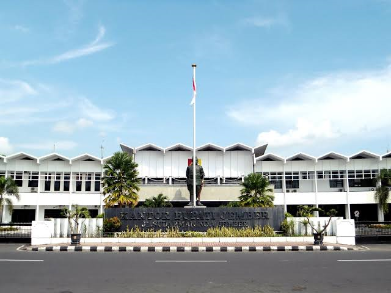

BLOG & GALERI >
BLOG >
PROFIL JEMBER
Sebagian besar wilayah Kabupaten Jember merupakan dataran rendah, dengan ketinggian tanah rata-rata
83 meter di atas permukaan laut dan merupakan daerah yang cukup subur dan sangat cocok untuk
pengembangan komoditi pertanian dan perkebunan, sehingga dikenal sebagai daerah / lumbung pangan
dan penghasil devisa negara sektor perkebunan di Provinsi Jawa Timur.
Secara keseluruhan Kabupaten Jember memiliki luas 3.293,34 Kilometer persegi dengan rincian sebagai
berikut :
Luas wilayah ( Km2) menurut klasifikasi lereng ( Th 2004 )
- Kemiringan 0 – 2 º : 1.205,40 Km2
- Kemiringan 2 - 15 º : 678,87 Km2
- Kemiringan 15 – 40 º : 355,12 Km2
- Kemiringan diatas 40 º : 1.053,92 Km2
Luas wilayah ( Km2) menurut ketinggian tempat ( meter dpal )
- Ketinggian tempat 0 – 25 : 654,32 Km2
- Ketinggian tempat 25 – 100 : 638,16 Km2
- Ketinggian tempat 100 – 500 : 1.240,80 Km2
- Ketinggian tempat 500 – 1.000 : 522,51 Km2
- Ketinggian tempat 1.000 – 2.000 : 206,32 Km2
- Ketinggian tempat diatas 2.000 : 31,33 Km2
Luas wilayah ( Km2) menurut Jenis Tanah
- Aluvial : 254, 33 Km2
- Gley : 401,83 Km2
- Regosol : 596,14 Km2
- Andosol : 205,22 Km2
- Mediteran : 131,56 Km2
- Latosol : 1.704,25 Km2
Luas Wilayah ( Ha ) menurut Jenis Penggunaan lahan
- Perkampungan : 31.500,08 Ha ( 9,57 % )
- Sawah : 86.685,56 Ha ( 26,32 % )
- Tegal/Ladang : 43.782,37 Ha ( 13,29 % )
- Perkebunan : 34.590,46 Ha ( 10,50 % )
- Tambak : 358,66 Ha ( 0,11 % )
- Rawa : 35,62 Ha ( 0,01 % )
- Hutan : 121.039,61 Ha ( 36,75 % )
- Semak / padang rumput : 389,06 Ha ( 0,09 % )
- Tanah tandus/lhn Kritis : 1.469,26 Ha ( 0,45 % )
- Lain-lain : 5.593,26 Ha ( 2,91 % )